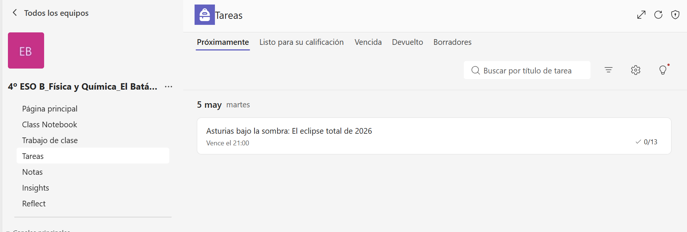
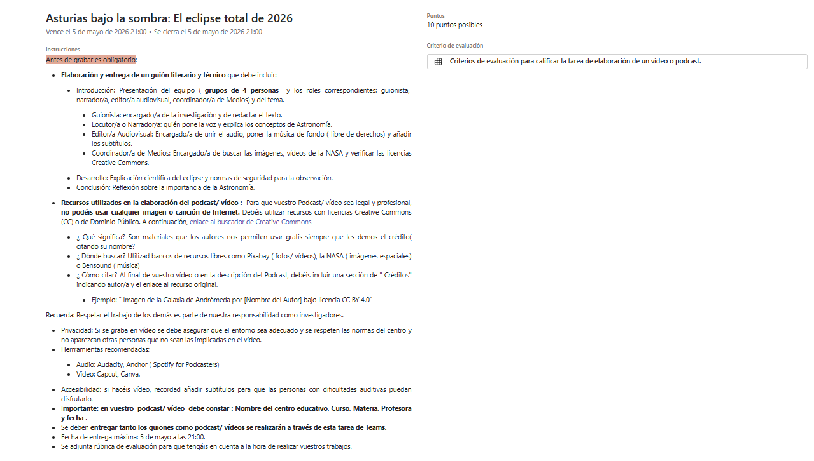

Dinámica del eclipse y seguridad ocular
En agosto de 2026, Asturias se quedará a oscuras en pleno día. Vuestra misión es informar a la comunidad sobre este fenómeno y cómo verlo sin peligro.
Saberes básicos:
- Dinámica del sistema Sol-Tierra-Luna
- Eclipses totales
- Seguridad ocular ( Filtros ISO 12312-2)
Recurso base ( NASA): Antes de grabar, consultad: Cómo observar un eclipse solar total de forma segura
Tarea: Grabación de un programa corto titulado " Asturias bajo la sombra 2026.
El alumnado debe explicar la dinámica del eclipse total de sol de agosto de 2026 y las normas de seguridad para su observación. Entre las herramientas a utilizar se destacan: Capcut (vídeo), Audacity o Anchor ( audio/podcast).
Grabación de un programa corto titulado " Asturias bajo la sombra 2026"
Llegó el momento de convertiros en divulgadores y divulgadoras científicas. Teniendo en cuenta los principios del DUA podréis elegir la opción que mejor se adapta a cada grupo: creación de un podcast o creación de un vídeo sobre el gran evento astronómico: " Asturias bajo la sombra: El eclipse total de 2026"
Instrucciones
Vuestro producto debe estar diseñado para alumnado de otros cursos. El lenguaje debe ser claro pero riguroso ( recordad y utilizad lo aprendido sobre la gravedad y las órbitas).
Antes de grabar es obligatorio:
- Elaboración y entrega de un guión literario y técnico que debe incluir:
- Introducción: Presentación del equipo ( grupos de 4 personas y los roles correspondientes: guionista, narrador/a, editor/a audiovisual, coordinador/a de Medios) y del tema.
- Guionista: encargado/a de la investigación y de redactar el texto.
- Locutor/a o Narrador/a: quién pone la voz y explica los conceptos de Astronomía.
- Editor/a Audiovisual: Encargado/a de unir el audio, poner la música de fondo ( libre de derechos) y añadir los subtítulos.
- Coordinador/a de Medios: Encargado/a de buscar las imágenes, vídeos de la NASA y verificar las licencias Creative Commons.
- Desarrollo: Explicación científica del eclipse y normas de seguridad para la observación.
- Conclusión: Reflexión sobre la importancia de la Astronomía.
- Introducción: Presentación del equipo ( grupos de 4 personas y los roles correspondientes: guionista, narrador/a, editor/a audiovisual, coordinador/a de Medios) y del tema.
- Recursos utilizados en la elaboración del podcast/ vídeo : Para que vuestro Podcast/ vídeo sea legal y profesional, no podéis usar cualquier imagen o canción de Internet. Debéis utilizar recursos con licencias Creative Commons (CC) o de Dominio Público. A continuación, enlace al buscador de Creative Commons
- ¿ Qué significa? Son materiales que los autores nos permiten usar gratis siempre que les demos el crédito( citando su nombre?
- ¿ Dónde buscar? Utilizad bancos de recursos libres como Pixabay ( fotos/ vídeos), la NASA ( imágenes espaciales) o Bensound ( música)
- ¿ Cómo citar? Al final de vuestro vídeo o en la descripción del Podcast, debéis incluir una sección de " Créditos" indicando autor/a y el enlace al recurso original.
- Ejemplo: " Imagen de la Galaxia de Andrómeda por [Nombre del Autor] bajo licencia CC BY 4.0"
Recuerda: Respetar el trabajo de los demás es parte de nuestra responsabilidad como investigadores.
- Privacidad: Si se graba en vídeo se debe asegurar que el entorno sea adecuado y se respeten las normas del centro y no aparezcan otras personas que no sean las implicadas en el vídeo.
- Herrramientas recomendadas:
- Audio: Audacity, Anchor ( Spotify for Podcasters)
- Vídeo: Capcut, Canva.
- Accesibilidad: si hacéis vídeo, recordad añadir subtítulos para que las personas con dificultades auditivas puedan disfrutarlo.
- Importante: en vuestro podcast/ vídeo debe constar : Nombre del centro educativo, Curso, Materia, Profesora y fecha .
- El vídeo se debe guardar en formato MP4 y el podcast en formato MP3
- La entrega de vuestros trabajos tanto guiones como podcast/ vídeos se realizarán a través de la tarea de Teams correspondiente.
Nota: Se recomienda este método para asegurar la compatibilidad con la nueva versión de Teams v2
- Entrega de la tarea ( SOLO UNA PERSONA DEL EQUIPO)
- Para entregar vuestro trabajo, seguid estos pasos en Microsoft Teams:
- Abrir Microsoft Teams y ve al equipo de clase ( antes de entregar, debéis subir previamente el vídeo a OneDrive, las instrucciones están a continuación)
- En el menú lateral en nuestro equipo de clase, ir a Tareas.
- Seleccionad la tarea, haciendo doble clic en ella


CÓMO ENTREGAR TU VÍDEO ( sin salir de Teams)
1. Abre tu OneDrive dentro de Teams
- Mira la columna de la izquierda en Teams ( donde están el Chat y los Equipos)
- Busca el icono de "Archivos" o los tres puntitos (...) y selecciona OneDrive
- Dale al botón " Cargar" y sube tu vídeo ahí mismo.
2. Copia el enlace
- Una vez subido, busca el vídeo en la lista y haz clic en los tres puntitios (...) que hay al lado de su nombre.
- Selecciona " compartir"
- Antes de copiar nada, haz clic en el texto que aparece ( suele poner " Las personas que especifiques...")
- Elige la opción: " Personas en la Consejería de Educación (Educastur)"
- Asegúrate de que abajo ponga " Puede ver" ( no " Puede editar"). Dale a Aplicar
3. Copia el vínculo y entrégalo
- Ahora dale al botón " Copiar vínculo"
- Ve a nuestro Equipo de clase, pestaña tareas
- Entra en la tarea del experimento, pulsa en " Adjuntar", " Vínculo" y pega el enlace
- No olvides adjuntar también el pdf con el guión
- Por último, dale al botón ENTREGAR.
Nota: Se recomienda este método para asegurar la compatibilidad con la nueva versión de Teams v2
Rúbrica para la evaluación del vídeo/ podcast
| Sobresaliente | Notable | Aprobado | Insuficiente | No entrega | |
|---|---|---|---|---|---|
| Contenido científico | Explica con total claridad la Ley de Gravitación y la dinámica del eclipse (2) | Explica los conceptos pero comete errores leves en la terminología (1.5) | Describe los conceptos de forma superficial o incompleta. (1) | Los conceptos científicos son erróneos o inexistentes. (0.5) | No realiza el apartado. (0) |
| Guión y estructura | Presenta un guión técnico/ literario detallado con introducción, desarrollo y cierre. (2) | El guión está completo pero le falta fluidez o estructura clara. (1.5) | El guión es muy básico y apenas sirve de guía para el producto (1) | El guión apenas sirve de guía para el producto. (0.5) | No realiza el apartado. (0) |
| Calidad del podcast/vídeo | Audio/vídeo nítido sin ruidos, con edición profesional y uso de fuentes libres. (2) | Buena calidad técnica, aunque con fallos menores de edición o ritmo. (1.5) | Calidad aceptable, pero dificulta ligeramente la comprensión del mensaje. (1) | Calidad muy pobre; el audio no se entiende o la imagen es confusa. (0.5) | No realiza el apartado. (0) |
| Trabajo en equipo | Los roles están definidos y todos participan. (2) | Los roles están asignados pero la coordinación fue mejorable. (1.5) | Solo algunos miembros del equipo asumen el trabajo del artefacto. (1) | Apenas ningún miembro del equipo trabaja. (0.5) | No realiza el apartado. (0) |
| Uso de herramientas | Domina herramientas avanzadas ( Capcut, Audacity, Canva) de forma creativa. (2) | Utiliza las herramientas correctamente para cumplir el objetivo. (1.5) | Uso muy limitado de las herramientas tecnológicas solicitadas. (1) | No utiliza apenas las herramientas digitales propuestas en la SdA (0.5) | No realiza el apartado. (0) |
- Actividad
- Nombre
- Fecha
- Puntuación
- Notas
- Reiniciar
- Imprimir
- Aplicar
- Ventana nueva
Adivina, adivinanzas
Lee las adivinanzas y escribe las respuesta en el recuadro.
ATENCIÓN: PULSAR SOLO SI HAS ACERTADO
ADIVINANZA 1:
La respuesta es: El Eclipse Solar Total del 12 de agosto de 2026.
En Mieres habrá oscuridad total a las 20:27, el cielo se volverá azul oscuro/ negro como si fuera medianoche.
La temperatura bajará unos 5ºC de golpe. ¡ Sentirás un escalofrío!
Las palomas de Mieres buscarán sus nidos a toda prisa .
Recordatorio importante: ¡ Nunca miréis al sol sin las gafas especiales de eclipse!
ADIVINANZA 2
Los patos del Caudal se quedarán quietos en la orilla pensando que ha llegado la hora de dormir.